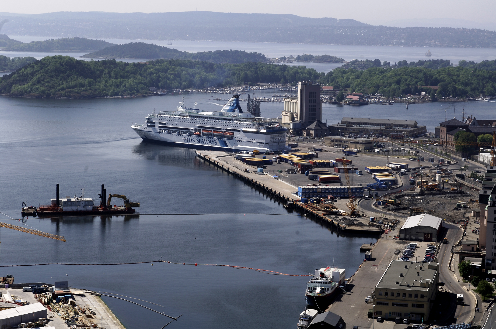
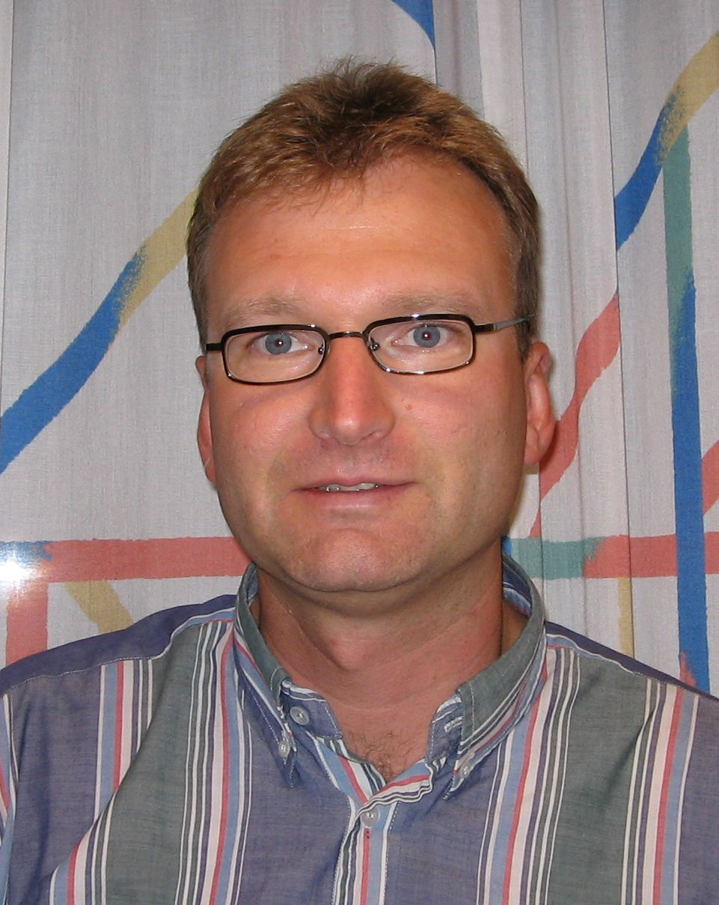
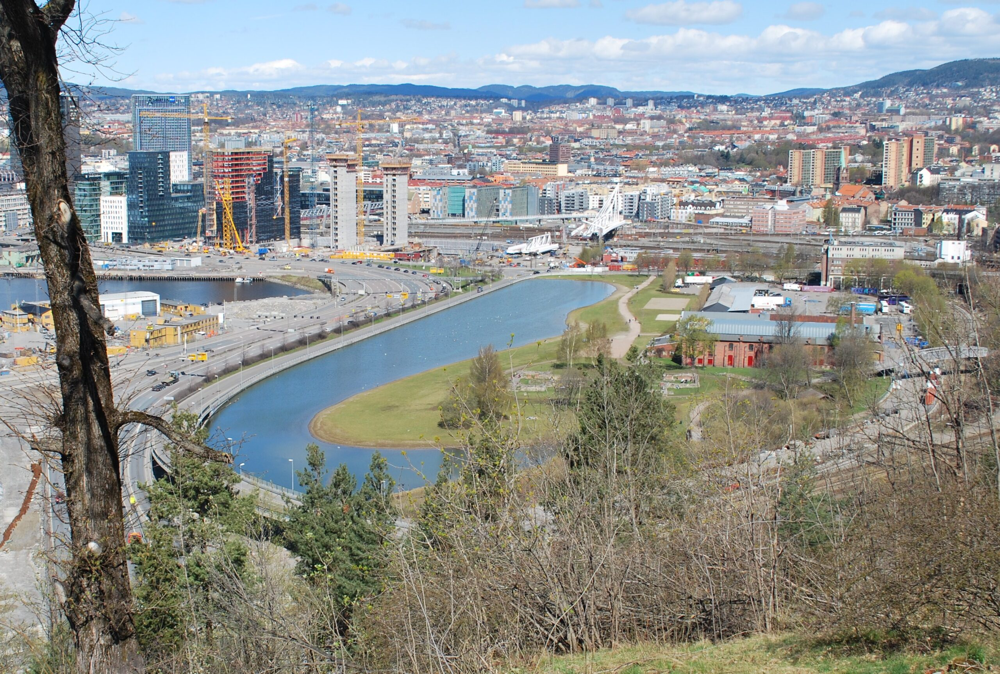
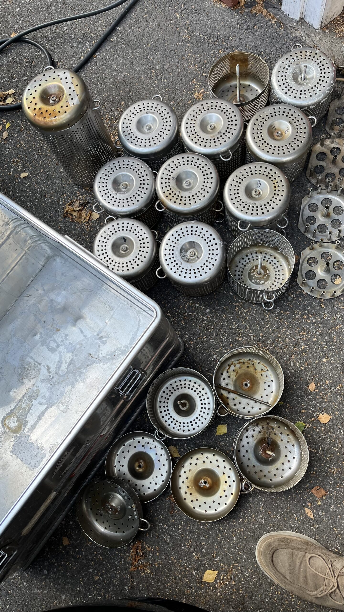

Hisøy Miljø AS - din los
Senior miljøfaglig rådgivning i sjø, jord og vann.
Hisøy Miljø AS bistår offentlige og private oppdragsgivere med miljøtekniske undersøkelser, marine vurderinger, renseløsninger, naturrestaurering og beslutningsstøtte i krevende miljøsaker.

Hvorfor Hisøy Miljø
Et smidig ekspertmiljø med kort vei fra spørsmål til beslutning.
Personlig oppfølging
Du møter senior kompetanse tidlig og beholder samme faglige kontakt gjennom hele oppdraget.
Riktig ekspertise fra start
Vi kobler inn spesialister innen kjemi, biologi, marine miljø, hydrogeologi, natur og tiltaksvurdering når saken krever det.
Fleksible oppdragsformer
Fastpris, løpende rådgivning, suksessbaserte modeller eller langsiktige samarbeidsavtaler vurderes ut fra behov og risiko.
Tjenester
Miljøfaglige leveranser som dekker hele beslutningskjeden.
Miljøtekniske undersøkelser
Undersøkelser av jord, grunnvann, porevann og masser med tydelig kobling til tiltaksbehov, myndighetskrav og videre utvikling.
Marine undersøkelser
Sedimentprøver, resipientvurderinger, småbåthavner, mudring, deponi og rådgivning i kyst- og havnerelaterte saker.
Renseløsninger og in situ-tiltak
Vannrensing, biologisk og enzymatisk nedbrytning, pilotering og vurdering av praktiske gjennomføringsmodeller.
Naturrestaurering og overvann
Blågrønne løsninger, dammer, våtmarker, jordvern og naturbaserte tiltak som kombinerer funksjon og robusthet.
eDNA og miljøovervåking
Målrettet overvåking av arter og påvirkning, passive prøvetakere, mikroplast og dokumentasjon av miljøtilstand over tid.
EDD, plansaker og miljørådgivning
Environment Due Diligence, miljøstøtte i eiendom og industri, plansaker, tvister og krevende beslutningsunderlag.
Arbeidsmåte
Vi jobber strukturert, men uten unødvendig friksjon.
Avklare risiko og beslutningsbehov
Vi definerer hva oppdragsgiver faktisk må vite for å komme videre trygt og effektivt.
Designe undersøkelse og prøvetaking
Omfang, metode og spesialistbruk tilpasses sakens kompleksitet og myndighetskrav.
Vurdere tiltak og handlingsrom
Resultater omsettes til klare anbefalinger, kost/nytte og gjennomførbare tiltak.
Følge opp gjennomføring og dialog
Vi bistår videre i møte med entreprenører, myndigheter, prosjektering og dokumentasjon.

Referanseprosjekter
Prosjektområder vi kjenner godt fra praksis.

Bynære vannmiljøer og restaurering
Vurdering av vannkvalitet, blågrønne løsninger, naturbasert overvannshåndtering og sammenheng mellom teknikk og landskap.

Forurensede lokaliteter og tiltak
Undersøkelse, risikovurdering og valg av praktiske tiltak ved komplekse forurensningssituasjoner.

Vannbehandling og naturbaserte anlegg
Dammer, infiltrasjon, vannveier og robuste løsninger som kombinerer rensing, flomdemping og naturhensyn.

Feltarbeid, overvåking og dokumentasjon
Fra prøveuttak og miljøovervåking til vurdering av effekt og videre anbefalinger for oppdragsgiver.
Noen av virksomhetene vi har bistått
Inspect AS
Frost Arkitekter AS
Nordr AS
Thon Eiendom
Statsforvalteren i Agder
Norges Naturvernforbund
Frogn Marina AS
Comrod AS
DS Follo AS
Tømrerenes Feriehjem AS
Klar for neste steg
Trenger du en trygg miljøfaglig sparringspartner?
Vi tar gjerne en første samtale om situasjonen, beslutningene som må tas og hvordan riktig undersøkelsesopplegg kan settes opp.